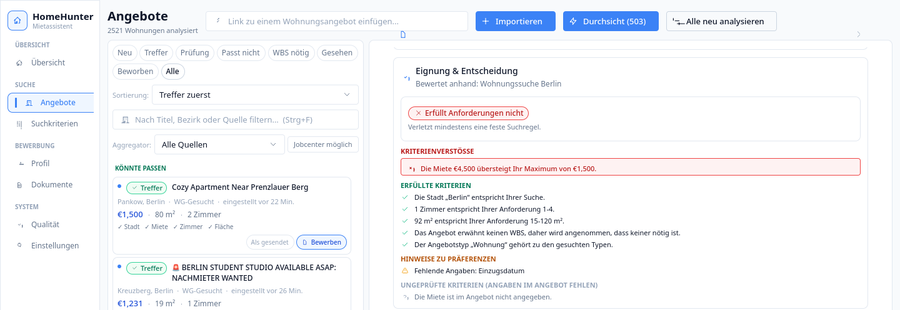
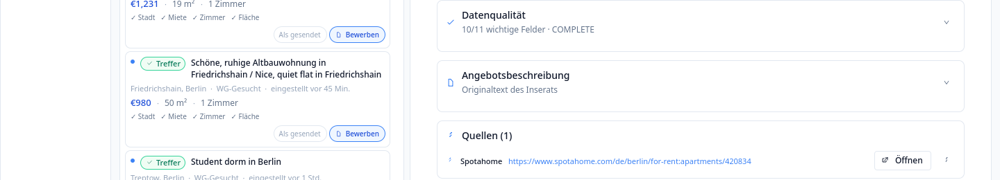
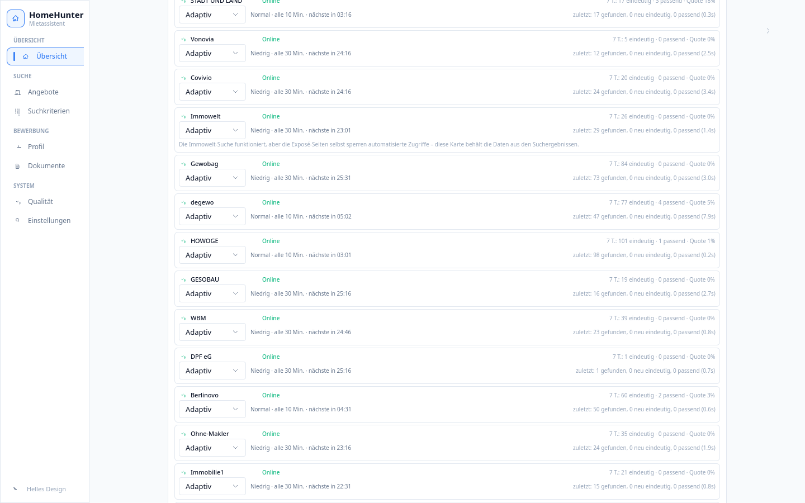

Das Produkt
HomeHunter sammelt Mietangebote aus neunzehn öffentlich abrufbaren Quellen und führt dieselbe Wohnung, die auf mehreren Portalen steht, zu einer Karte zusammen. Jedes Angebot wird gegen die schriftlich festgelegten Kriterien des Nutzers geprüft — von einem festen Regelwerk, das zu jedem Ergebnis die Gründe nennt. Passt eine Wohnung, führt ein Klick den Nutzer auf das Original beim Anbieter; dort liest er weiter und bewirbt sich. Die Anwendung ist in Entwicklung; eine öffentliche Version gibt es noch nicht. Geplant sind Ausgaben für macOS, Windows, Linux, iOS und Android.
Für Datenpartner
Was wir mit Ihren Daten tun
Wir zeigen Ihre Angebote in der Anwendung des Nutzers an. Jede Karte nennt die Quelle, aus der sie stammt. Ein Klick öffnet Ihr Exposé im Browser des Nutzers — gelesen, beworben und abgeschlossen wird auf Ihrer eigenen Seite. HomeHunter ist die Stelle, an der der Nutzer entscheidet, welches Angebot er ansieht; Ihre Seite bleibt die Stelle, an der er handelt.
Was wir nicht tun
- Wir veröffentlichen Ihre Daten nicht und geben sie nicht weiter.
- Wir bauen keine eigene öffentliche Ergebnisliste.
- Wir legen keine wiederverwendbare Datenbank Ihres Bestands an.
- Wir umgehen keine Schutzmechanismen.
- Wir füllen und versenden keine fremden Formulare.
- Wir nehmen nicht selbsttätig Kontakt zu Vermietern auf.
Was Sie davon haben
Der Nutzer erreicht Ihr Angebot vorgefiltert: Stadt, Miete, Zimmerzahl, Fläche und die übrigen Bedingungen sind bereits abgeglichen, und er weiß, warum dieses Angebot zu ihm passt. Statt vieler Anfragen auf gut Glück erhalten Sie wenige, die zum Objekt passen. Wir stehen vor Ihrem Angebot, nicht an seiner Stelle.
Integrationsbereitschaft
Die Anwendung ist auf einer Abstraktion namens ListingSource gebaut
(src/homehunter/sources/base.py). Der Grundsatz ist in ADR-007
festgehalten: der übrige Teil des Systems erfährt nie, auf welchem Weg ein
Angebot beschafft wurde — nur, dass es dem kanonischen Modell Listing
entspricht.
Unter dieser Abstraktion arbeiten heute neunzehn Adapter und zwei verschiedene Beschaffungswege:
- HTTP und HTML;
- JSON-Schnittstelle —
ApiRecordListingSource, über den Vonovia, STADT UND LAND und Covivio gelesen werden.
Der Anschluss einer offiziellen Schnittstelle ist deshalb ein weiterer Adapter gegen eine bereits bestehende Schnittstelle und kein Umbau des Systems. Zu erwarten sind Tage, nicht Monate.
Stand bei ImmoScout24, ohne Beschönigung: reserviert ist der
Platz, geschrieben ist der Code nicht. Die Kennung
ListingSourceId.IMMOSCOUT24 und der Katalogeintrag in
src/homehunter/sources/catalog.py bestehen — mit den Domänen
immobilienscout24.de und immoscout24.de und dem Status
ACCESS_RESTRICTED. Die Registrierung in
src/homehunter/discovery/registry.py gibt diesen Status offen zurück,
statt Ergebnisse vorzutäuschen. Abruf und Abbildung der Antwort werden
geschrieben, sobald Spezifikation und Zugang vorliegen. Für die übrigen auf
dieser Seite genannten Häuser besteht bisher kein Schnittstellen-Adapter.
Aus der Anwendung




Wie es arbeitet
- LINKDie Suche holt bei jeder registrierten Quelle die Links der neuesten Angebote.
- OPENJeder Link wird einmal geöffnet — über HTTP oder über die JSON-Schnittstelle der Quelle.
- READMiete, Zimmer, Fläche, Adresse und Bedingungen werden gelesen und in ein einheitliches Modell überführt.
- DEDUPEDieselbe Wohnung auf mehreren Portalen wird zu einer Karte zusammengeführt; jeder Link bleibt erhalten.
- PRÜFENEin Regelwerk vergleicht das Angebot mit den Kriterien des Nutzers. Ergebnis: passt, muss angesehen werden, oder scheidet aus — jeweils mit den Gründen.
- NUTZERHier endet die Anwendung. Der Nutzer öffnet das Original beim Anbieter und bewirbt sich dort selbst — das Programm tut das nie für ihn.
Selbst ausprobieren
Sechs Beispielangebote, geprüft gegen die Kriterien unten. Entscheiden Sie zuerst selbst — ziehen Sie die Karte nach rechts, wenn Sie sich bewerben würden, nach links, wenn nicht. Danach zeigt die Karte, wie das Regelwerk entscheidet und aus welchen Gründen.
- Berlin
- 1–3 Zimmer
- 30–90 m²
- max. 950 € kalt
- max. 1.250 € warm
- kein WBS vorhanden
Ziehen, Pfeiltasten ← → oder die Schaltflächen.
Beispieldaten, keine echten Anzeigen. Die Art der Quelle steht auf jeder Karte, damit erkennbar bleibt, aus welcher Ecke des Marktes ein Angebot kommt. Das Urteil rechnet Ihr Browser aus, nach denselben Regeln, die die Anwendung anwendet — es wird nichts übertragen und nichts gespeichert.
Quellen
| Quelle | Art | Weg | Treffer je Durchlauf |
|---|---|---|---|
| Gewobag | städtisch | HTTP/HTML | ~42 |
| degewo | städtisch | HTTP/HTML | ~10 |
| HOWOGE | städtisch | HTTP/HTML | ~28 |
| GESOBAU | städtisch | HTTP/HTML | ~6 |
| WBM | städtisch | HTTP/HTML | ~8 |
| Berlinovo | städtisch | HTTP/HTML | ~30 |
| STADT UND LAND | städtisch | JSON-Schnittstelle | ~15 |
| Vonovia | privat | JSON-Schnittstelle | ~15 von 72 Datensätzen |
| Covivio | privat | JSON-Schnittstelle | nicht einzeln erfasst |
| Ohne-Makler | privat | HTTP/HTML | ~24 |
| DPF eG | Genossenschaft | HTTP/HTML | 0–3 |
| Immowelt | Portal | HTTP/HTML, Trefferkarten | ~23–25 |
| WG-Gesucht | Portal | HTTP/HTML | ~79 |
| immobilien.de | Portal | HTTP/HTML | 20 |
| Immobilie1 | Portal | HTTP/HTML | ~15 |
| markt.de | Kleinanzeigen | HTTP/HTML | ~13 |
| Wunderflats | möbliert | HTTP/HTML | ~59 |
| HousingAnywhere | möbliert | HTTP/HTML | ~46 |
| Spotahome | möbliert | HTTP/HTML | ~96 |
Neunzehn Quellen, live geprüft am 24. und 28. August 2026. „Treffer je Durchlauf“ ist der Umfang eines begrenzten Durchlaufs, nicht der Bestand der Quelle.
Was ein offizieller Zugang verbessern würde
| Quelle | Heutiger Stand | Was ein offizieller Zugang bewirkt |
|---|---|---|
| ImmoScout24 | Wird nicht gelesen. Die Suche antwortet ohne Partner-Schnittstelle mit HTTP 401, und die Nutzungsbedingungen untersagen automatische Abfragen. | Die größte Einzelquelle des Berliner Marktes, die derzeit vollständig fehlt. |
| meinestadt.de | Registriert, aber nicht lesbar: Suche, Sitemap und robots.txt antworten gleichermaßen mit HTTP 403. | Aus einer toten Zeile im Quellenverzeichnis wird eine lebende Quelle. |
| Immowelt (AVIV Group) | Lesbar sind allein die Trefferkarten der Suche; die Exposé-Seiten stehen hinter DataDome. Immonet leitet in denselben Bestand. | Vollständige Exposés statt verkürzter Karten — und Immonet über denselben Zugang. Der größte Zugewinn an Datenqualität je Zugang. |
| WG-Gesucht | Funktioniert, doch je Durchlauf werden nur drei Seiten über einfaches HTTP gelesen, und der Veröffentlichungszeitpunkt eines Inserats ist nicht zugänglich. | Höhere Abrufgrenzen und der Veröffentlichungszeitpunkt, also eine messbare Reaktionsgeschwindigkeit. |
| Wunderflats, HousingAnywhere, Spotahome | Funktionieren über das Auswerten von HTML, das bei jeder Umgestaltung der Seite bricht. | Verlässlichkeit und ein stabiler Vertrag anstelle einer Auswertung fremder Seitenstruktur. |
Grenzen
Kein Umgehen von Schutzmechanismen
Quellen mit Bot-Schutz oder rein clientseitiger Darstellung werden als nicht
verfügbar geführt und nicht umgangen. Der Fehlertyp
ComplianceBlockedError ist im Quelltext ein regulärer Ausgang und
kein Sonderfall; in sources/base.py ist festgehalten, dass eine
Quelle niemals stillschweigend auf das Auswerten fremder Seiten ausweicht, wenn
kein zulässiger Weg besteht. Die Entscheidung zu ImmoScout24 ist in
pocs/a_immoscout/RESULT.md dokumentiert.
Keine fremden Formulare
HomeHunter füllt kein Formular auf Ihrer Seite aus und versendet nichts. Die Bewerbung schreibt und verschickt der Nutzer selbst, bei Ihnen, auf Ihrem Weg. Was umkehrbar ist, ist automatisiert. Was nicht umkehrbar ist, bleibt beim Menschen.
Deterministisch
Das Urteil fällt ein Regelwerk, das jeden geprüften Punkt einzeln benennt. Neuronale Netze kommen in der Anwendung nicht vor.
Datenschutz
Die Daten des Nutzers bleiben auf seinem Gerät: eine lokale SQLite-Datenbank im Datenverzeichnis des Betriebssystems. Einen Server von HomeHunter, auf dem Angebots- oder Nutzerdaten zusammenliefen, gibt es nicht. Die Verarbeitung findet in der EU statt und richtet sich nach der DSGVO.
Technik
Python 3.13, PySide6 mit QML, SQLite, Playwright, Alembic; Version 1.0.0. Der Bestand umfasst 1120 Tests, dazu durchgängige Typprüfung mit mypy und Stilprüfung mit ruff.
Status und Kontakt
HomeHunter ist in Entwicklung. Eine öffentliche Fassung gibt es noch nicht, der Quelltext ist nicht offen. Hinter dem Projekt steht kein Unternehmen, sondern eine Person.
Anfragen zu Daten- oder Schnittstellenzugang gern unmittelbar an:
Damian Lapiha · demilapkill@gmail.com
The product
HomeHunter collects rental adverts from nineteen publicly reachable sources and merges the same flat, listed on several portals, into a single card. Every advert is checked against the criteria the user has written down — by a fixed set of rules that names the reason for each outcome. Where a flat fits, one click takes the user to the original on the provider's own site, where they read on and apply. The application is under development; there is no public release yet. Builds for macOS, Windows, Linux, iOS and Android are planned.
For data partners
What we do with your data
We display your adverts inside the user's application. Every card names the source it came from. One click opens your own exposé in the user's browser — reading, applying and closing all happen on your site. HomeHunter is where the user decides which advert to look at; your site remains where they act.
What we do not do
- We do not publish your data and do not pass it on.
- We do not build a public result list of our own.
- We do not create a reusable database of your inventory.
- We do not circumvent protection mechanisms.
- We do not fill in or submit anyone else's forms.
- We do not contact landlords automatically.
What you get from it
The user reaches your advert pre-filtered: city, rent, rooms, area and the rest of the conditions are already checked, and they know why this advert fits them. Instead of many enquiries sent on the off-chance you receive a few that match the object. We stand in front of your offer, not in place of it.
Integration readiness
The application is built on an abstraction called ListingSource
(src/homehunter/sources/base.py). The principle is recorded in ADR-007:
the rest of the system never learns by which route an advert was obtained —
only that it conforms to the canonical Listing model.
Nineteen adapters and two different acquisition routes already work beneath that abstraction:
- HTTP and HTML;
- a JSON interface —
ApiRecordListingSource, through which Vonovia, STADT UND LAND and Covivio are read.
Connecting an official interface is therefore one more adapter against an interface that already exists, not a rebuild of the system. Expect days, not months.
The state of ImmoScout24, without embellishment: the slot is
reserved, the code is not written. The identifier
ListingSourceId.IMMOSCOUT24 and the catalogue entry in
src/homehunter/sources/catalog.py exist — with the domains
immobilienscout24.de and immoscout24.de and the status
ACCESS_RESTRICTED. The registration in
src/homehunter/discovery/registry.py returns that status openly
instead of feigning results. The request and the mapping of the response will be
written once a specification and access are available. For the other companies
named on this page no interface adapter exists yet.
From the application
How it works
- LINKThe search collects links to the newest adverts from every registered source.
- OPENEach link is opened once — over HTTP or through the source's JSON interface.
- READRent, rooms, area, address and conditions are read and converted into one common model.
- DEDUPEThe same flat on several portals is merged into one card; every link is kept.
- PRÜFENA set of rules compares the advert with the user's criteria. The outcome: it fits, it needs a look, or it is out — with the reasons in each case.
- NUTZERThis is where the application stops. The user opens the original on the provider's own site and applies there — the program never does it for them.
Try it yourself
Six sample adverts, checked against the criteria below. Decide for yourself first — drag the card to the right if you would apply, to the left if you would not. The card then shows how the rules decide, and on what grounds.
- Berlin
- 1–3 rooms
- 30–90 m²
- max. €950 base rent
- max. €1,250 total
- no WBS held
Drag, arrow keys ← →, or the buttons.
Sample data, not real adverts. The kind of source is named on each card so it stays clear which corner of the market an advert comes from. The verdict is computed by your browser, by the same rules the application applies — nothing is transmitted and nothing is stored.
Sources
| Source | Type | Route | Hits per run |
|---|---|---|---|
| Gewobag | municipal | HTTP/HTML | ~42 |
| degewo | municipal | HTTP/HTML | ~10 |
| HOWOGE | municipal | HTTP/HTML | ~28 |
| GESOBAU | municipal | HTTP/HTML | ~6 |
| WBM | municipal | HTTP/HTML | ~8 |
| Berlinovo | municipal | HTTP/HTML | ~30 |
| STADT UND LAND | municipal | JSON interface | ~15 |
| Vonovia | private | JSON interface | ~15 of 72 records |
| Covivio | private | JSON interface | not recorded separately |
| Ohne-Makler | private | HTTP/HTML | ~24 |
| DPF eG | cooperative | HTTP/HTML | 0–3 |
| Immowelt | portal | HTTP/HTML, result cards | ~23–25 |
| WG-Gesucht | portal | HTTP/HTML | ~79 |
| immobilien.de | portal | HTTP/HTML | 20 |
| Immobilie1 | portal | HTTP/HTML | ~15 |
| markt.de | classifieds | HTTP/HTML | ~13 |
| Wunderflats | furnished | HTTP/HTML | ~59 |
| HousingAnywhere | furnished | HTTP/HTML | ~46 |
| Spotahome | furnished | HTTP/HTML | ~96 |
Nineteen sources, verified live on 24 and 28 August 2026. "Hits per run" is the size of one bounded run, not the size of the source's inventory.
What official access would improve
| Source | State today | What official access achieves |
|---|---|---|
| ImmoScout24 | Not read at all. Without a partner interface the search answers HTTP 401, and the terms of use prohibit automated queries. | The single largest source on the Berlin market, currently missing entirely. |
| meinestadt.de | Registered but not readable: search, sitemap and robots.txt all answer HTTP 403. | A dead row in the source list becomes a living source. |
| Immowelt (AVIV Group) | Only the search result cards can be read; the exposé pages sit behind DataDome. Immonet redirects into the same inventory. | Full exposés instead of truncated cards — and Immonet through the same access. The largest gain in data quality per single key. |
| WG-Gesucht | Works, but only three pages per run are read over plain HTTP, and an advert's publication time is not available. | Higher limits and the publication time, meaning a measurable speed of response. |
| Wunderflats, HousingAnywhere, Spotahome | Work by parsing HTML, which breaks with every redesign of the page. | Reliability and a stable contract instead of parsing someone else's page structure. |
Limits
No circumvention of protection mechanisms
Sources with bot protection or purely client-side rendering are recorded as
unavailable and are not worked around. The error type
ComplianceBlockedError is a regular outcome in the source code and not
an exceptional case; sources/base.py records that a source never
silently falls back to scraping when no permitted route exists. The decision on
ImmoScout24 is documented in pocs/a_immoscout/RESULT.md.
No third-party forms
HomeHunter fills in no form on your site and submits nothing. The user writes and sends the application themselves, with you, by your own route. What is reversible is automated. What is not reversible stays with the person.
Deterministic
The verdict comes from a set of rules that names every point it checked. There are no neural networks in the application.
Data protection
The user's data stays on their device: a local SQLite database in the operating system's data directory. There is no HomeHunter server on which advert or user data would be collected. Processing takes place in the EU and follows the GDPR.
Technology
Python 3.13, PySide6 with QML, SQLite, Playwright, Alembic; version 1.0.0. The suite holds 1120 tests, alongside type checking with mypy and linting with ruff.
Status and contact
HomeHunter is under development. There is no public release yet and the source code is not open. There is no company behind the project — one person.
Enquiries about data or interface access are welcome directly:
Damian Lapiha · demilapkill@gmail.com